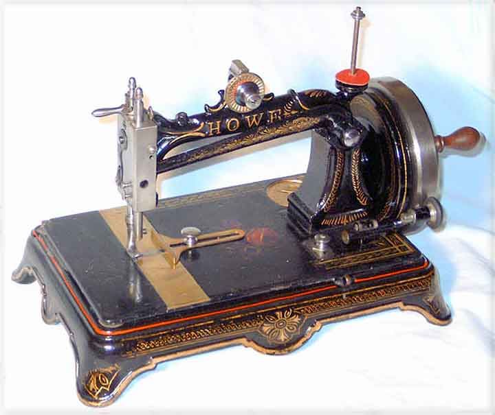

THE NEEDLEBAR
Amasa B. Howe Sewing Machine Company
(Stockwell Brothers)
New York
Howe Hand Machine (2)
Serial #1022086
Picture courtesy of David Stirling

This page may not be reproduced
or distributed in part or in whole without the prior written permission of
the copyright owner